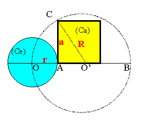
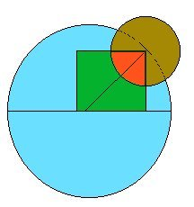

Emblema XXI.
revu le 9 février 2003
Fac ex mare & fœmina circulum, inde quadrangulum, hinc triangulum, fac circulum & habebis lap. Philosophorum.

(Du mâle et de la femelle, fais un cercle, puis, de là, un carré, et ensuite
un triangle ; fais un cercle et tu auras la Pierre des Philosophes1.)Du mâle et de la femme, fais-toi un cercle unique,
D’où surgit le carré aux côtés bien égaux.
Construis-en un triangle, à son tour transformé
En sphère toute ronde. La Pierre alors est née.
Si ton esprit est lent à saisir ce mystère,
Comprends l’œuvre du géomètre et tu sauras2.
Platon, ce très illustre philosophe, a enseigné que les connaissances qui sont les fondements de tous les arts et de toutes les sciences sont comme gravées et imprimées en acte dans l’esprit humain, et qu’en se les rappelant, en se les répétant, chacun peut saisir et connaître tous les enseignements. Pour le prouver il met en scène un enfant encore tout jeune, inculte et ignorant les lettres et il dispose les interrogations qui lui sont posées sur la géométrie de telle manière que l’on voit l’enfant faire des réponses justes à toutes les questions et, bon gré mal gré ou à son insu, parvenir au cœur du sanctuaire d’une science si ardue3. Il en conclut que toute science, toute doctrine ne commence pas par être apprise et recueillie par les enfants, mais qu’ils ne font que se la rappeler et la dérouler dans leur esprit, au moyen du souvenir (recordatione), et il feint de rapporter ceci à sa grande année, grâce à laquelle, selon lui, quarante-huit mille années solaires plus tôt les mêmes personnes, les mêmes actions se sont présentées d’une façon identique avant la révolution du ciel4. Mais il n’échappe à personne que ce sont là des sortes de rêveries sans aucun fondement de vérité. Nous ne nions pas qu’il y ait, placées en nous, certaines étincelles des connaissances, et de pures virtualités qu’il faut actualiser par l’apprentissage et l’enseignement ; mais, qu’elles soient de telle nature et de telle importance que, sans aucune culture préalable, elles constituent les pépinières des arts et des sciences, nous refusons de l’admettre.
Mais, demanderont d’autres, d’où sont donc sortis les arts et les sciences, si les hommes ne les ont pas découverts ? Ont-ils été transmis à l’origine du haut du ciel ou par les dieux des païens ? Je réponds qu’une chose est d’affirmer que les cendres recouvrent des braises ardentes en une quantité telle que, si seulement on les met au jour en enlevant les cendres, elles suffisent à cuire nos aliments et à chauffer nos membres refroidis, mais qu’autre chose est de dire que là sont cachées seulement de petites étincelles qui, avant d’être utilisées pour la cuisson et le chauffage, doivent être stimulées et augmentées au moyen de leurs propres aliments par l’art et l’industrie des hommes, faute de quoi elles peuvent s’éteindre facilement et être entièrement réduites à l’état de cendres froides5. Cette dernière opinion est celle des Aristotéliciens et la première celle des Platoniciens6. La raison et l’expérience approuvent celle-là, la fantaisie ou imagination seule s’accorde avec celle-ci. Et l’on pourrait alors demander pourquoi Platon avait fait placer à la porte de son école une inscription déclarant que l’on n’y était pas admis si on ignorait la géométrie, puisque, selon lui, même un petit enfant illettré la connaît d’une façon actuelle. Les hommes seraient-ils plus ignorants que les enfants ? Ou bien les adultes auraient-ils livré à l’oubli ce que les enfants savent ? Cette opinion ne doit pas être retenue7. Nous voyons en effet la bête sans raison, instruite par la nature, redouter et éviter les dangers du feu, de l’eau, de la chute brutale et des autres occasions semblables, même si elle ne voit la lumière que depuis peu de temps, tandis que le petit enfant ne sent ni n’évite de pareilles choses tant qu’il ne s’est pas fait mal en se brûlant le doigt à la flamme d’une bougie, à la manière de la luciole qui se brûle les ailes et meurt. Pourquoi la jeune abeille, la mouche, le moucheron ne se précipitent-ils pas dans le feu, de leur vol très rapide, alors que l’expérience ne leur a pas fait connaître le péril qui en résultera pour eux ? C’est que la nature les a instruits, mais n’a pas enseigné l’homme qui vient de naître.
Si la géométrie est pour les enfants si naturelle et si aisée, comment se fait-il que la quadrature du cercle soit demeurée inconnue de Platon, au point qu’Aristote, disciple de Platon, ait déclaré qu’elle était connaissable mais non encore connue ?8 Cependant les Philosophes naturels ne l’ont pas ignorée, comme le montre leur commandement de convertir le cercle en carré et le carré à son tour en cercle par l’intermédiaire du triangle. Par ce cercle ils entendent le corps le plus simple, sans angles, et par le carré ils désignent les quatre éléments, comme s’ils disaient de prendre une figure corporelle susceptible d’être trouvée, de la diviser dans les quatre couleurs élémentaires pour obtenir un quadrilatère aux quatre côtés égaux. Tout le monde comprend que cette quadrature est physique et convient à la nature. Aussi elle procure plus d’utilité à l’Etat et plus de gloire à l’esprit humain que cette autre quadrature mathématique, qui est purement théorique ou séparée de la matière9.
Pour apprendre la première quadrature naturelle, il faut explorer la géométrie qui traite des corps solides ; reconnaître la profondeur des figures solides, de la sphère et du cube par exemple, et la faire passer dans la pratique ou l’application manuelle. Si le tour ou la circonférence de la sphère est de 32 pieds, de quelle longueur sera l’un des côtés du cube pour égaler la capacité de la sphère ? Inversement, si la sphère a un volume de 32 mesures et tant de circonférence, de combien sera un côté du cube pour occuper un volume égal, ou en considérant le volume que contient la sphère ou le cube, par rapport au nombre de pieds de chaque circonférence ? Les philosophes veulent de même que le carré soit réduit en un triangle, c’est-à-dire en corps, esprit et âme10. Ces trois apparaissent sous la forme de trois couleurs qui précèdent le rouge, à savoir le corps ou terre dans le Noir de Saturne, l’esprit dans la blancheur lunaire, en tant qu’eau, l’âme ou air dans le jaune du Soleil11. Le triangle sera alors parfait mais il doit être de nouveau changé en cercle, c’est-à-dire en rouge invariable. Par cette opération la femme est changée en mâle et devient une seule chose avec lui et le sénaire est transformé dans le premier des nombres parfaits par un qui est deux, ayant fait retour à la monade12, en qui résident la tranquillité et la paix éternelles.
Notes1. Sur ce chapitre, voyez aussi l'article de John Eberly, dans l'introduction à l'Atalanta fugiens. Ce chapitre fait étalage de la cabale hermétique, sous les dehors d'une monade. Certains éléments permettraient de la comparer à la Monade Hiéroglyphique de John Dee, mais elle s'en démarque, précisément parce que Maier est encore plus abstrait que John Dee et qu'il élève les éléments de Platon à la hauteur de pricnipes éternels. Quoi qu'il en soit, l'emblème XXI est célèbre. Il a été repris dans plusieurs traités parlant des choses occultes et figure en 1ère de couverture dans le Trésor des Alchimistes de Jacques Sadoul [J'ai lu, 1970]. Il est vrai que le personnage qui est représenté et l'opération à laquelle il se livre ont l'air pleins de mystère et l'impression en est renforcée du fait que ce personnage est pris de dos. Il s'agit donc d'une démonstration géométrique sur la Pierre. Quand Maier écrit qu'il faut faire un cercle du mâle et de la femelle, il veut singifier par là que les substances voilées par le couple alchimique doivent être liquéfiées dans un milieu approprié. De ce milieu, il donne d'abord les éléments constitutifs selon Platon : TERRE, EAU, FEU et AIR. En signifiant aussi que le but de l'opération est d'obtenir une TERRE rénovée, puisque le carré est l'un des éléments du cube qui définit chez Platon le symbole de la TERRE. Voyez à ce sujet l'Idée alchimique, V et la Cristallogénie où nous donnons tous détails utiles. Puis, Maier les trois principes : Mercure, Soufre et Sel sous l'espèce du triangle. Ces trois principes forment aussi les quatre éléments, puisque l'EAU, le FEU et la l'AIR, congénères, sont formés à partir de triangles isocèles. Seule la TERRE est construite à partir de triangles scalènes. Nous redonnons ici les équations cabalistiques qui permettent de passer d'un élément à un autre. Ces équations, Platon les a employées mais il n'a pas intégré la TERRE.
L'AIR figure en première ligne, la TERRE en seconde, puis l'EAU et le FEU.
Enfin, Maier fait décrire un second cercle à son personnage qui englobe le triangle. Il y a donc deux cercles inscrits. Le 1er cercle est à l'égal d'une des deux roues que nous avons vu dans l"Atalanta, VIII - XV. Ces roues sont aussi celles dont parle Jean D'Espagnet dans l'Oeuvre secret d'Hermès. Ce 1er cercle représente l'hiéroglyphe du feu de solution ; il est plus petit que le 2ème parce que cette époque est facile à passer et assez rapide. Le 2ème cercle, celui que le personnage trace avec son compas fait toute la difficulté du 3ème oeuvre. Il est plus grand, nécessairement d'ailleurs, parce que le temps y est beaucoup plus mesuré, si l'on nous suit bien. Ce 2ème cercle figure l'hiéroglyphe de la coagulation. Autrement dit, le 1er cercle permet d'accéder à la chambre centrale du labyrinthe et le second cercle permet de sortir du labyrinthe. Sans doute, beaucoup d'étudiants ont su saisir le fil d'Ariane dans la première partie, mais, comme dans le Crépuscule des Dieux, leur fil s'est rompu à l'instar de celui des Nornes. La rupture du fil montrait que le temps s'arrêtait et que la fin des dieux était proche. Ainsi en est-il pour l'oeuvre. Si l'artiste casse son fil en retournant sur ses pas, il faut craindre qu'il égare les astres du ciel chymique et que, comme Phaéton, il brûle sa terre ou se perde au firmament.
2. L'emblème XXI fait voir à gauche un papier où l'on remarque un carré, une digamma annonçant le labyrinthe de Salomon et un polyèdre. Aux pieds de l'Adepte, une croix ; plus à droite, une sorte de sextant. Le compas est ainsi disposé : sa pointe est au milieu de l'intersection du bord supérieur du cercle et du milieu du côté supérieur du carré. C'est assez dire que le Sel fixe, symbolisé par la pointe du compas, est à la jonction de la TERRE [figurée par le carré, cf. note 1] et de l'EAU. C'est ce sel incombustible qui est voilé sous l'image de la salamandre.
3. C'est là le fait typique de la vision platonicienne. Les mathématiques ont une existence indépendante de l'esprit humain. Du moins, les concepts qu'elles sous-tendent. Ainsi, un théorème est démontrable. Il se comporte donc à l'instar d'un objet spirituel autonome existant de toute éternité. Cette idée se rapproche de la pristia sapienta que Newton avait cru déceler chez les Anciens. C'est-à-dire la connaissance donnée au début de l'humanité par les dieux.
4. Il y a là un rappel de la « grande année » astrologique ou syzygie primordiale, correspondant à un moment unique où toutes les planètes étaient alignées. On pourra consulter avec profit sur ce sujet fabuleux l'Astrologie mondiale d'André Barbault [Fayard, 1979]. Les Chaldéens [ce que Fulcanelli semble confirmer dans sa trilogie] admettaient que le Monde était alternativement inondé et brûlé, à intervalles périodiques. Et la période de reproduction de ces phénomènes était celle qui ramenait tous les astres errants à occuper une même position par rapport au ciel des étoiles fixes. Un fragment de Bérose semble avoir été conservé par Sénèque dans ses Questions Naturelles [livre III, can. 28 et 29] :« Le déluge d'eau et de feu arrive lorsqu'il plaît à Dieu de créer un Monde meilleur et d'en finir avec l'ancien [...] Le globe, dit-il, prendra feu quand tous les astres qui ont maintenant des cours si divers, se réuniront dans le Cancer [...] Le déluge aura lieu quand toutes ces étoiles seront rassemblées de même dans le Capricorne. La première de ces constellations régit le solstice d'été et l'autre le solstice d'hiver...»
A l'évidence, il y a là une intention hermétique. En alchimie, dire que les planètes s'alignent veut dire que les métaux s'alignent selon le même état. Or, il n'existe qu'un état réversible qui soit compatible avec la prophétie de Bérose : la solution [dissolution] ou la coagulation. L'époque de l'une et l'autre nous est donnée. Au Cancer aura lieu la coagulation [le Monde prend feu] et au Capricorne, la dissolution [le Déluge]. Par cabale en effet, dire que le Monde prend feu, c'est dire qu'on a incorporé un rayon de soleil dans la TERRE, comme le dit si bien Fulcanelli dans le Mystère des Cathédrales. A l'inverse, le Déluge est synonyme de dissolution et de corruption. Si Déluge il y a, c'est parce que le monde était corrompu. Il y a là une indication.
5. Il y a là une vaste allégorie qui tourne sur les cendres. C'est-à-dire sur le Soufre sublimé [entendez dissous] dans le Mercure. Les braises ardentes dont parle Maier sont les rayons ignés solaires qui sont contenus dans le Mercure, avant que procède l'opération que l'on appelle réincrudation. Opération qui prend lieu à l'époque où le Soleil traverse le signe du Sagittaire. L'art et l'industrie de l'homme consistent à savoir imposer le calorique nécessaire à la cuisson du Soufre, sans toutefois brûler les fleurs, principale complication à redouter dans la conduite de l'oeuvre en cette époque du 3ème oeuvre.
6. Chevreul a fait voir dans son Résumé de l'Histoire de la Matière et dans ses études sur Cambriel et sur Artéphius que les alchimistes étaient forcément des platoniciens.
7. C'est par le seul raisonnement logique que l'on retrouve les théorèmes et les axiomes connus des Anciens. Newton et Pascal avaient, de cette manière, revisité Euclide à leur insu. Et bien des découvertes sont réalisées de manière concomittante, quand le paradigme ambiant s'y prête. C'était vrai du calcul différentiel, mis au point en même temps par Newton [système des fluxions] et par Leibniz. Ce fut encore vrai au moment où la physique quantique s'est imposée dans l'infiniment petit, la mécanique ondulatoire de Louis de Broglie étant superposable à la mécanique matricielle de Heisenberg. On pourrait ainsi multiplier les exemples dans l'histoire des sciences. Seul l'Art échappe à ces résurgences périodiques. Ni Pierre Boulez ni Olivier Messiaen ne pourront recréer les Psaumes de David d'Heinrich Schütz ou les Lamentations de Jérémie de Roland de Lassus.
8. On sait, depuis que l’irrationalité de la constante p a été démontrée, qu’il est inutile de chercher la quadrature du cercle, c'est-à-dire construire un cercle et un carré qui soient de même aire.
FIGURE II
(la quadrature du cercle : Mercure, Soufre et Terre - site consulté )Aristophane [c. 444 - 380 av. J.-C.] pensait donner avec une règle, la forme du carré au cercle. Beaucoup plus tard, Nicolas de Cusa [1404-1464] s'attaque au problème et avance la valeur de p avec 4 décimales. Les tentatives de Joseph Scalinger sont réfutées par Viète. Thomas Hobbes [1588-1679] en vient presque aux mains contre John Wallis qui réfute ses tentatives. C'est enfin Lindemann qui démontre que p est un nombre transcendant. Or, comme tout nombre construit à l'aide du compas et de la règle satisfait à une équation algébrique, la quadrature du cercle est impossible. L'hermétiste ne saurait évidemment se contenter de cette affirmation, tout à fait vraie et rationnelle. Mais il sait, par la foi de son esprit, qu'il arrivera à cette opération, réputée impossible, grâce à l'ouverture de son coeur. Ce cont là des paroles que, nous l'espérons, les Amoureux de science apprécieront. Imaginons ceci : soit le cercle de centre O' représenté comme l'Ouroboros de la Chrysopée de Cléopâtre ; soit le cercle de centre O, dont le centre se situe sur le périmètre de celui de centre O'. Ce cercle de centre O peut être scindé en deux parties irrationnelles : la première partie est définie par le sous-ensemble situé à l'extérieur du périmètre du cercle de centre O'. On y voit un croissant de Lune. L'orientation du croissant ne nous est pas indifférente. Situé à droite, il s'agit de l'hiéroglyphe du premier Mercure [le premier quartier] ; situé à gauche, il s'agit du Mercure philosophique ou double Mercure [le dernier quartier, comme sur la figure ci-dessus]. Situé en bas, il figure les cornes de Diane ou du Taureau. Quant à l'autre partie du cercle, qui forme le sosu-ensemble inscrit dans le périmètre, intérieur à l'aire du cercle de centre O', elle forme le Lune gibbeuse. Nous avons expliqué dans l'Atalanta, XLV un phénomnène particulier, qui affecte la Lune à un moment donné de sa révolution : le clair de Terre. Et que ce clair de Terre est ce que l'on appelle la lumière cendrée de la Lune. Qu'enfin, cette lumière cendrée était maximale depuis le premier croissant observé le soir, qu'elle déclinait ensuite jusqu'au premier quartier pour disparaître lorsque la Lune était pleine. Même chose, lorsque la Lune devient gibbeuse et lorsqu'on voit apparaître son dernier quartier le matin, lorsque Eros, aux doigts rosés, se lève. Cette lumière cendrée n'est autre que le Soufre rouge des alchimistes, compris avec un grain de sel. On comprend que plus la surface interne du sous-ensemble sera importante [comprise dans l'aire du cercle de centre O'], plus cette lumière cendrée sera visible [par cabale, plus le Soufre sera sublimé dans le Mercure]. Mais alors, on comprend évidemment que le centre du cercle de centre O sera quelque part, sur la droite OO'. Voyons à présent le carré de côté a. Il figure l'élément TERRE. On peut y définir un triangle scalène, rectangle en A. Ce carré est entièrement situé dans l'aire du cercle de centre O', ce qui signifie que la TERRE est totalement dissoute : c'est le temps de la putréfaction. Lorsque le cercle de centre O va décrire sa révolution autour du cercle de centre O', celui-ci, à un moment donné, va entrer en contact avec le carré. La TERRE se mêle alors au Soufre.

FIGURE III
(la réincrudation est dans l'orbe de la flèche)A un moment ultérieur, le cercle de centre O sera centré de manière symétrique par rapport au rayon R et au carré. Cette symétrie va déterminer l'illusion d'une flèche, nettement visible sur la figure ci-dessus. Et cette flèche n'est autre que celle de notre Sagittaire, qui la décoche vers le Ciel en faisant tomber les pluies d'or de Rhodes.
9. Ce n'est point autrement que nous avons procédé ci-dessus pour montrer comment, envisagé du point de vue alchimique, on peut tirer la quadrature du cercle. Du signe du Bélier, que l'on aille au Capricorne, puis au Cancer. Enfin, rendez-vous dans la Balance. Vous aurez ainsi la figure du ternaire [cf. zodiaque alchimique] alchimique, combinant les quatre Eléments.
10. Ce triangle apparaît à la figure II.
11. Ainsi, la putréfaction est-elle le signe de la TERRE, l'EAU est-elle blanche, et l'AIR jaune. Seul l'élément FEU est exclu de ce système.
12. Allusion explicite à la Monade Hiéroglyphique de John Dee. Voyez aussi la partie I de l'Escalier des Sages de Barent Coenders van Helpen.